Item
Satu boneka bisa memakai hingga 2 item, Item Biasa dan Item Khusus digabung, dan yang sudah dipakai bertahan sampai permainan berakhir. Dua Item Biasa yang sama membuat efeknya dua kali lipat, tetapi Item Khusus yang sama hanya bisa dipakai satu. Jika tempatnya penuh, satu item yang dipakai dilepas untuk diganti, dan item itu hilang. Kamu juga bisa menekan Buang agar tidak menerima apa pun.
Item Biasa
- Item didapat dari Undian Item di Toko Acak.

Mengamuk
Kecepatan Serang +1% tiap 1% Darah yang hilang · hingga +100%

Nyawa Kedua
Bangkit sekali tiap ronde · Darah 50%
Pedang Kembar
Setiap serangan dasar mengenai musuh yang sama 2 kali
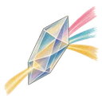
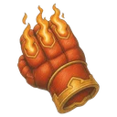
Sarung Tangan Bara
Serangan dasar membakar 3 dtk · 30% Daya Sihir per detik
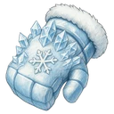
Sarung Tangan Embun Beku
Serangan dasar memberi Embun Beku · tumpukan ke-3 membekukan 1,5 dtk · beku lagi setelah 4 dtk
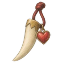
Taring Vampir
Saat menumbangkan, memulihkan darah sebesar sisa kerusakan
Mata Air Mana
+20 Mana tiap detik
Totem Umpan
Tiap 4 dtk: memprovokasi musuh dalam 4 petak selama 1 dtk
Jantung Bom
Jika ia atau panggilannya tumbang: 50% darah maks.-nya ke musuh dalam 1 petak
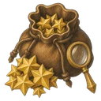
Pemburu Harta
Bintang dari musuh yang dihabisinya diperkuat 100%
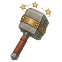
Palu
Tiap 4 serangan dasar: pingsan 0,5 dtk
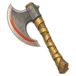
Kapak Penghabisan
Kerusakan diperkuat 50% ke musuh dengan Darah di bawah 30%
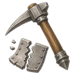
Penghancur Zirah
Tiap serangan dasar: Pertahanan musuh −5 · hingga −25
Sengat Racun
Serangan dasar meracuni · 10% kerusakan per detik · 3 dtk · menumpuk
Kipas Angin Puyuh
Tiap 6 dtk: tarik musuh dalam 2 petak
Lonceng Kemenangan
Saat menjatuhkan: Kecepatan Serang +30% · 3 dtk · menumpuk hingga 3
Buku Pengalaman
Pengalaman ronde diperkuat 100%
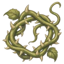
Sulur Berduri
Saat terkena serangan dasar: penyerang tertahan 0,5 dtk · sekali tiap 5 dtk
Bulu Penyuci
Tiap 5 dtk: hapus satu efek buruk
Genderang Perang
Saat skill: sekutu dalam 2 petak Kecepatan Serang +20% · 3 dtk
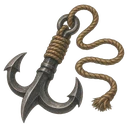
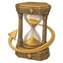
Jam Pasir
Sekali tiap ronde, saat jatuh: Darah 3 dtk sebelumnya
Balon Letus
Musuh yang ia tumbangkan meletus: 15% darah maks.-nya ke musuh dalam 1 petak
Kaca Pembesar Titik Lemah
+10% kerusakan untuk tiap kondisi pada target: Terbakar · Keracunan · Embun Beku · Lambat · Membeku · Setrum · Pingsan · tertahan · Pertahanan turun
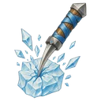
Pemecah Es
Kerusakan ke musuh membeku diperkuat 100%
Lencana Sahabat
Tiap Lencana Sahabat di lapangan: Daya Serang +8% untuk tiap boneka yang memakainya
Baju Baru Berkilau
Daya Serang diperkuat 50% selama darah penuh
Ikat Kepala Fokus
Tiap detik tak terkena serangan: Kecepatan Serang diperkuat 5% · hingga 100% · terkena, mulai lagi
Hadiah Terakhir
Jika ia atau panggilannya tumbang: sekutu dalam 2 petak pulih 30% darah maks. yang tumbang
Topeng Goblin
Musuh dalam 2 petak menerima kerusakan +15%
Bara Menular
Terbakar, Keracunan, Embun Beku, dan Setrum yang ia berikan pada musuh yang ia tumbangkan menular ke musuh dalam 2 petak
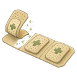
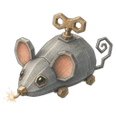
Tikus Mainan Per
Saat menjatuhkan: 25% peluang tikus berlari ke musuh terdekat lalu meletus · 200% Daya Serangnya dalam 1 petak
Item Khusus
- Setelah mengalahkan bos besar, kamu juga memilih satu dari 3 Item Khusus dan memberikannya ke satu boneka.
- Item Khusus juga keluar dari Toko Acak: sesekali dari Undian Item, dan selalu dari Undian Khusus.

Mahkota
Lainnya: Daya Serang diperkuat 20% · Kecepatan Serang diperkuat 20%
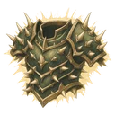
Zirah Duri
Duri: saat terkena serangan dasar, 50% kerusakannya kembali ke penyerang
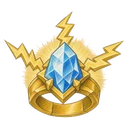
Cincin Petir
Serangan dasar melompat ke musuh lain dalam 2 petak, hingga 4 kali · Kerusakan dikurangi 50% · +10% per lompatan tersisa · Setrum 3 dtk
Mantel Raksasa
Ukuran diperkuat 100% · Darah diperkuat 100% · Kecepatan Gerak dan Serang dikurangi 20%
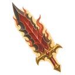
Pedang Berserker
Daya Serang dan Kecepatan Serang diperkuat 1% tiap 1% Darah yang hilang · Pulihkan 20% dari kerusakan yang diberikan · Kehilangan 2% Darah per detik
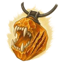
Kalung Kelaparan
Tidak mendapat Mana · Daya Serang diperkuat 200% · Kecepatan Serang dikurangi 50%
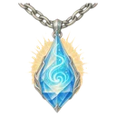
Kalung Dahaga
Mana yang dibutuhkan diperkuat 100% · Daya Sihir diperkuat 1% tiap 1% Mana yang terisi · diperkuat 100% saat penuh
Kembaran Cermin
Tiap ronde: kembaran 40% kekuatan ikut bertarung
Jubah Vampir
Pembawa Bendera
Bendera acak tiap ronde · dalam 2 petak
Jantung Pohon Tua
Darah diperkuat 100% · Pertahanan dan Ketahanan Sihir diperkuat 100% · Tidak bergerak · Tiap 4 dtk: menjadi target saat ini bagi musuh dalam 2 petak
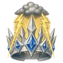
Mahkota Badai
Tiap 3 skill: petir ke semua musuh dalam jangkauan · 100% Daya Sihir
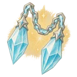
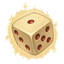
Dadu Takdir
Tiap 5 dtk, lempar dadu: Daya Serang diperkuat 100% · Kecepatan Serang diperkuat 100% · kebal kerusakan · Mana penuh · kerusakan yang diterima diperkuat 100% · tak bisa bergerak
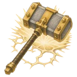
Palu Dua Tangan
Memakai kedua slot item · Daya Serang diperkuat 150% · Serangan dasar juga mengenai musuh dalam 1 petak
Cincin Rakus
Memakan item yang diberikan, efeknya tetap · slot tetap kosong · hingga 4
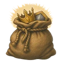
Karung Rampasan
Memakai item tiap bos yang ia habisi sampai akhir permainan · hanya yang bisa dipakai boneka